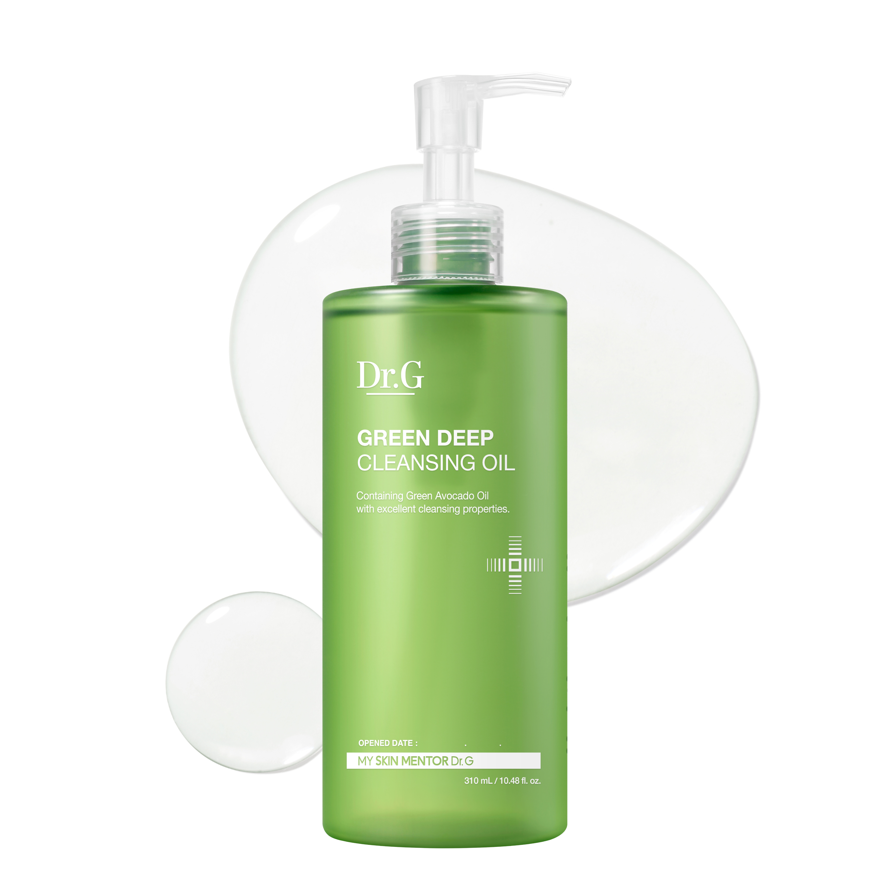
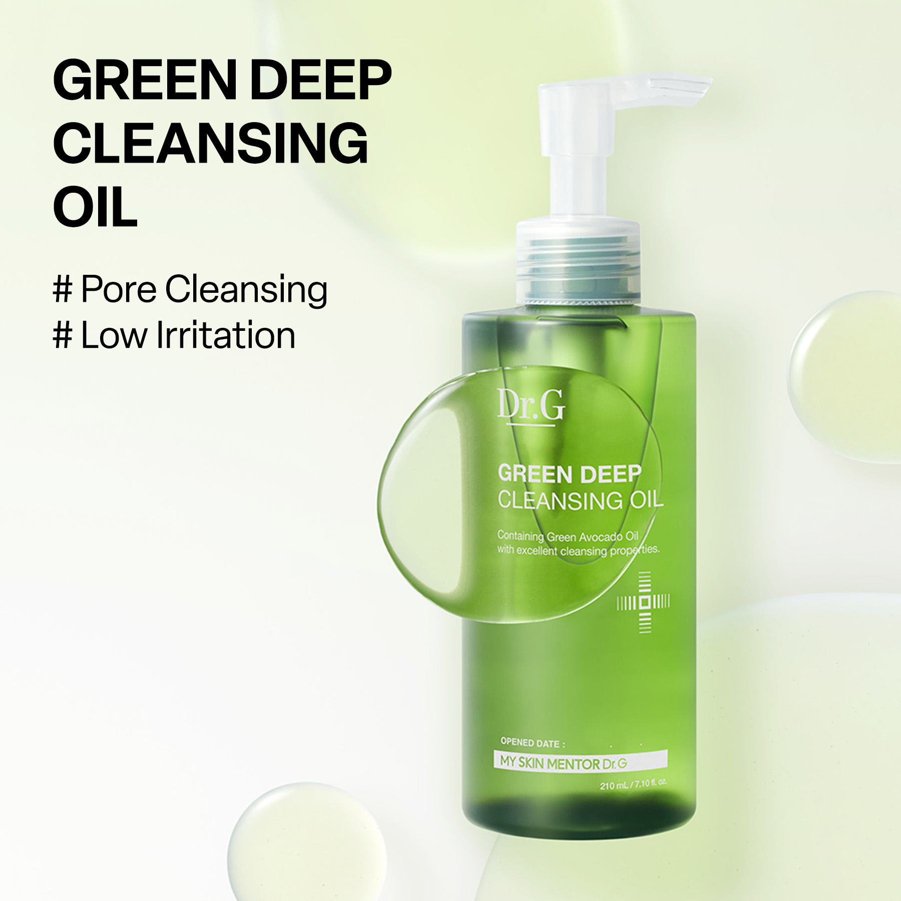
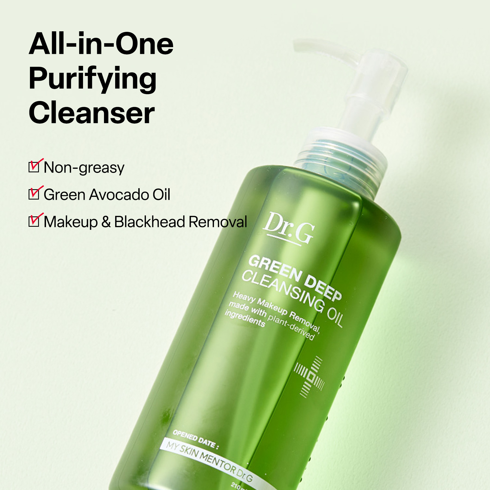
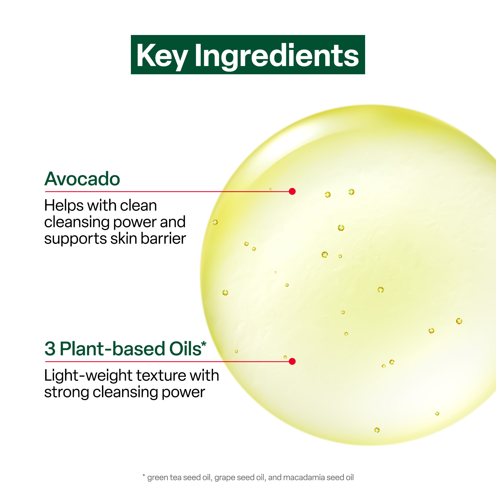
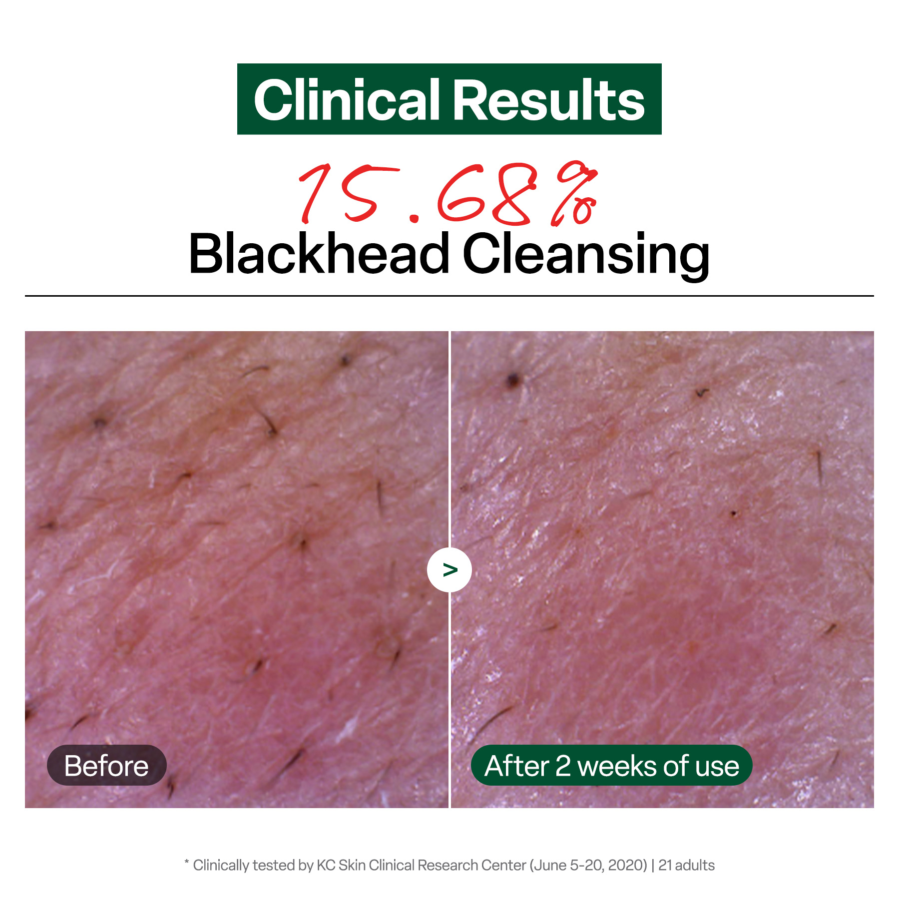

그린 딥 클렌징 오일 210ml
그린 아보카도 오일클렌징 성분을 담은 가벼운 클렌징 오일로, 메이크업·미세먼지·피지·각질·모공 노폐물 제거를 도와줍니다.
물과 빠르게 유화되어 끈적임 없이 깔끔하게 마무리됩니다.
물과 빠르게 유화되어 끈적임 없이 깔끔하게 마무리됩니다.
구분 :클렌징
- 닥터지 그린 딥 클렌징 오일은 모공을 깨끗하게 세정하고 메이크업, 각질, 피지, 미세먼지를 제거하는 데 도움을 줍니다.
- 그린 바이오 마이크로 오일 기술과 그린 아보카도 오일오일이 물과 만나 유화되어 산뜻하고 가볍게 마무리됩니다.
- 5가지 식물 유래 오일을 함유했으며, 22가지 성분으로 간결하게 구성한 포뮬러입니다.
- 피부 자극 테스트, 피부과 전문의 테스트, 민감성 피부 적합성 테스트를 거쳤습니다.
- 4중 딥 클렌징: 메이크업, 블랙헤드, 미세먼지, 일상 속 노폐물을 한 번에 효과적으로 제거해 끈적임 없이 피부를 말끔하게 세정해 줍니다.
- 식물성 클렌징 케어: 닥터지와 함께 만든 그린 아보카도 오일 4가지 식물 유래 오일이 노폐물을 녹여주고, 세안 후에도 피부를 부드럽고 편안하게 유지하며 영양감을 더해 줍니다.
- 장벽 지원 공식: 3가지 멀티로 풍성해진 프로바이오틱스 세안 후에도 피부 장벽을 강화하고 수분을 유지해 건강한 피부로 가꾸는 데 도움을 줍니다. 저자극 테스트를 거쳐 민감한 피부에도 적합합니다.
- 간편한 유화 텍스처: 물기가 없는 피부에 마사지한 뒤 물을 더해 오일을 가볍게 유화시키고, 잔여물이 남지 않도록 깨끗이 헹궈주세요. 한국식 이중 세안의 첫 단계로 사용하기 좋습니다.
- 닥터지 전문분야: 닥터지는 25년 전 저명한 피부과 전문의 안건영 원장이 설립한 대한민국 No.1 스킨케어 브랜드입니다. 피부과 전문의가 개발한 포뮬러는 피부 자극을 최소화하면서 효과적인 스킨케어 솔루션을 제공하도록 세심하게 설계되었습니다.
- 메이크업 클렌징: 98% 한 번 사용 후.
- 미세먼지 정화 : 92% 한 번 사용 후.
- 각질 개선 : 30% 청구 테이블에서; 다른 상품 이미지 목록 34.32%.
- 모공 클렌징 : 99.48% 제품 이미지에 표시된 클렌징 속도입니다.
- 피지: 41% 감소 및 37% 청구표의 수화 개선; 다른 이미지 목록 41.38% 피지 감소와 37.34% 수분 개선.
- 블랙헤드: 제품 이미지 쇼 15.68% 2주 후에 좋아짐.
- 소비자 만족도: 100% 100명을 대상으로 한 설문조사에서 당김 없는 세안에 높은 만족도를 보였습니다.
- 포도씨오일, 카프릴릭/카프릭트라이글리세라이드, 소르베스-30테트라올리에이트, 유채씨오일, 아보카도오일, 마카다미아씨오일, 녹차씨오일, 칸디다 봄비콜라/글루코오스/메틸레이프씨데이트발효물, 토코페롤, 정제수, 헥사메틸인다노피란, 부틸렌글라이콜, 류코노스톡/무발효여과물, 부틸아보카데이트, 글리세린, 퀼라자껍질추출물, 비누풀잎추출물, 1,2-헥산다이올, 흰버드나무껍질추출물, 락토바실러스, 비피다발효용해물, 향료 (F.I.L. T70105673/1)
- 1. 물기가 없는 손에 적당량을 덜어 물기가 없는 얼굴에 발라줍니다.
2. 부드럽게 마사지하여 메이크업과 노폐물을 녹여줍니다.
3. 물을 더해 유화시킨 후 깨끗이 헹궈주세요.


자주 묻는 질문
한국 소비자들이 닥터지를 사랑하는 이유
병원에서 시작된 혁신


K-뷰티 감성


민감성 피부 테스트 완료